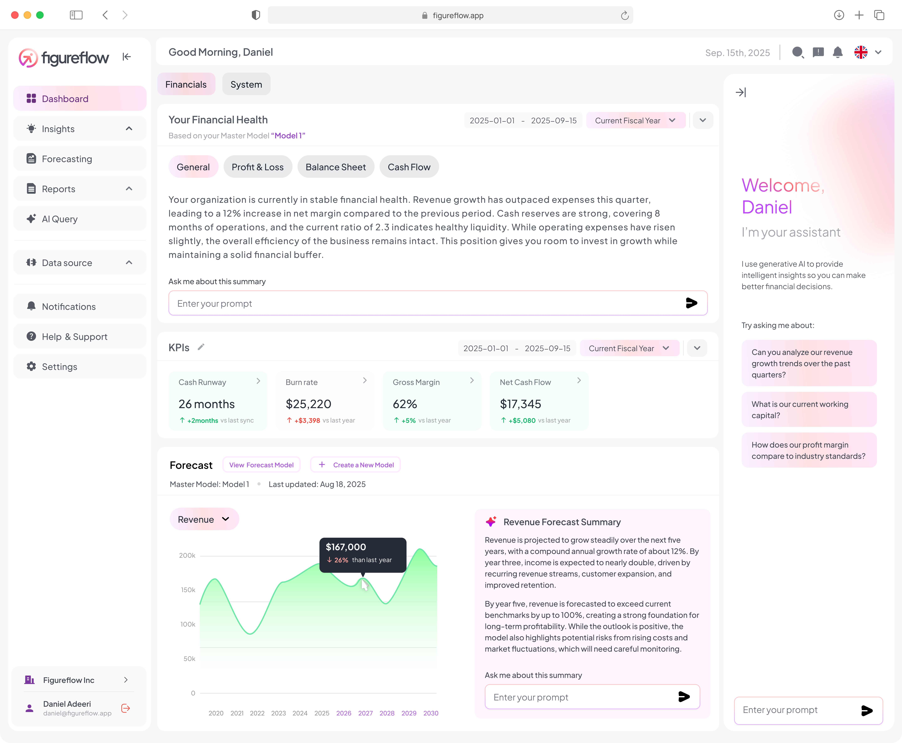
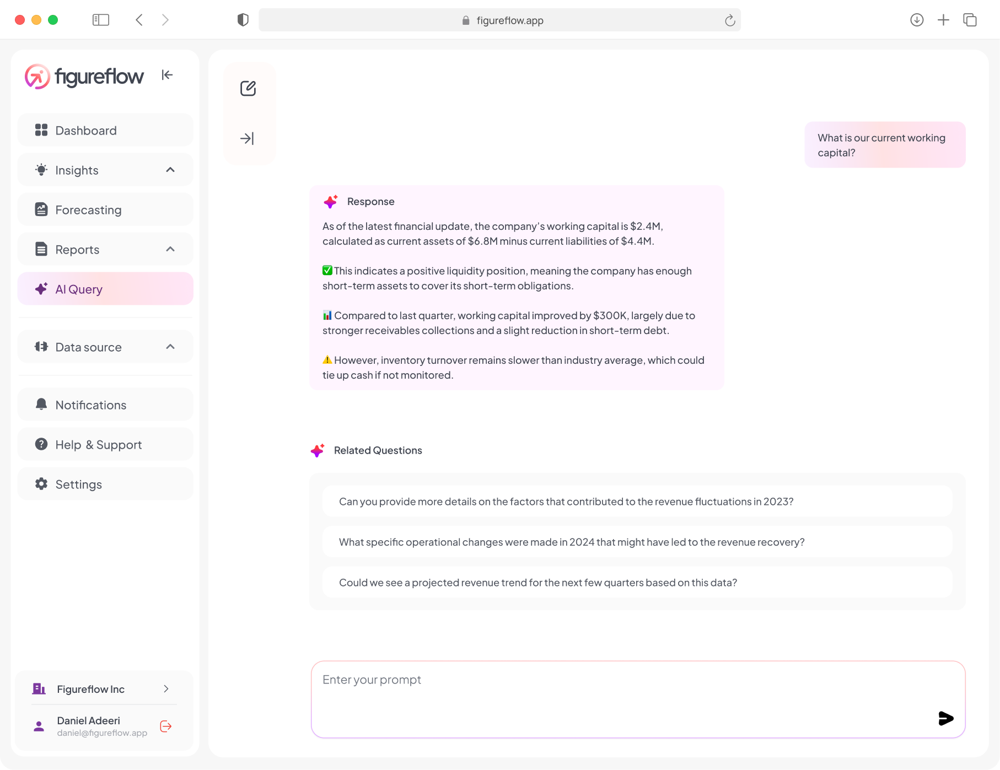
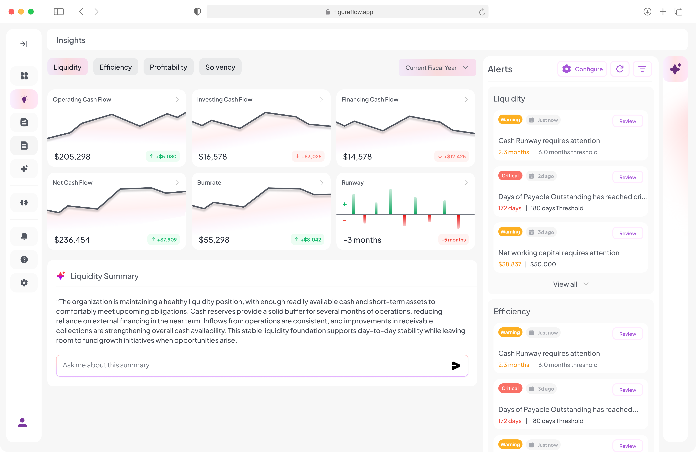

AI-driven reconciliation, month-end close, KPIs and cash forecasting — connected to your Odoo.
FigureFlow pulls your Odoo data into a CFO-grade dashboard the moment you connect — revenue, runway, cash position and 40+ KPIs update automatically.

Ask FigureFlow questions like "How much VAT do we owe this quarter?" or "What's our gross margin trend?" — the AI runs the analysis on your Odoo data and explains the answer.

Watch current ratio, quick ratio, cash conversion cycle and working-capital trends in real time. Threshold alerts fire when any metric crosses a configured limit.

After you click Connect, this module shares your Odoo URL, database name, login and a freshly-generated personal API key with figureflow.app. FigureFlow then uses those credentials to read:
account.account)account.move, account.move.line)res.partner)Credentials never travel through your browser; the handshake is server-to-server over HTTPS. You can revoke access at any time by deleting the API key from your Odoo user preferences or by clicking Disconnect in the settings page. See the FigureFlow privacy policy for full details.
This connector is free. FigureFlow's AI features are billed separately through your FigureFlow subscription — sign up at figureflow.app.
Email support@figureflow.app or visit figureflow.app.